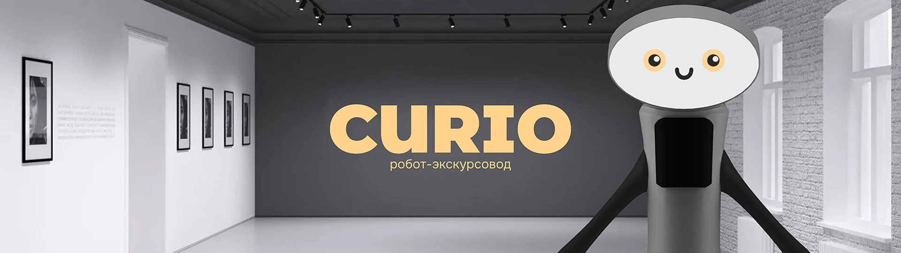
curio
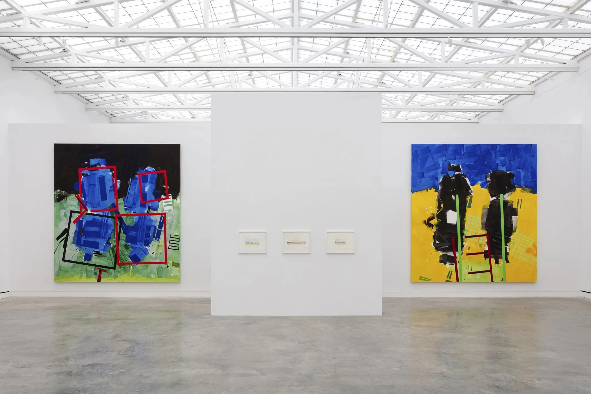
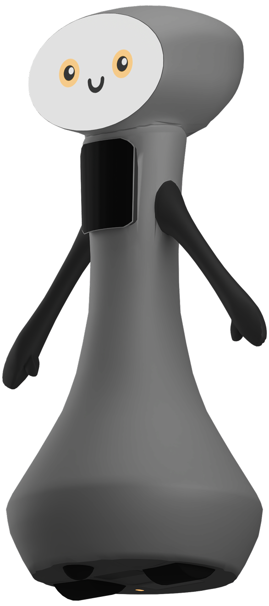
концепт дизайна
Обтекаемый корпус в форме песочных часов и система из восьми базовых эмоций на экране вызывают доверие и снимают барьер в общении с машиной.
Главная особенность объекта — способность головной части менять цвет, подстраиваясь под освещение и палитру конкретного музейного зала. В графике и документации сочетаются нейтральный графит, теплый желтый и технологичный синий.
процесс работы
Работа началась с исследования музейной робототехники, разбора аналогов (Promobot, Pepper, Kiki) и проектирования трех пользовательских сценариев: классической экскурсии, интерактивного квеста и диалога с посетителем.
На основе 3D-модели и чертежей в Blender были разработаны два интерфейса: сенсорное меню на планшете робота с картой залов и мобильное приложение для посетителей и загрузки базы экспонатов сотрудниками. Финалом стали афиша, многостраничная документация и 3D-видеопрезентация.
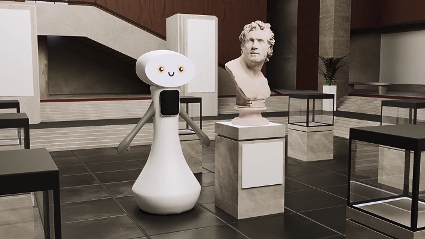
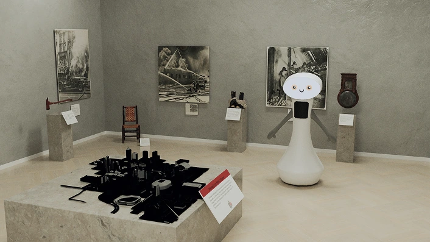
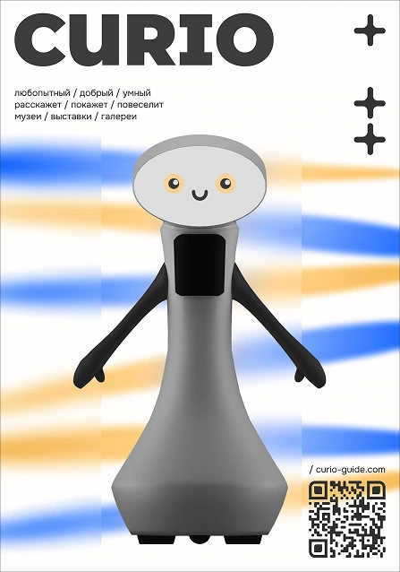
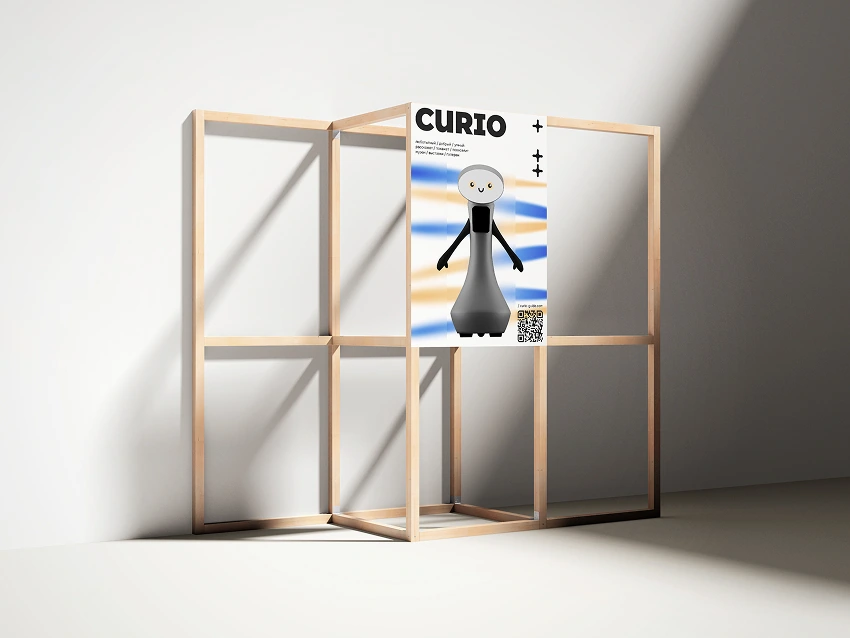
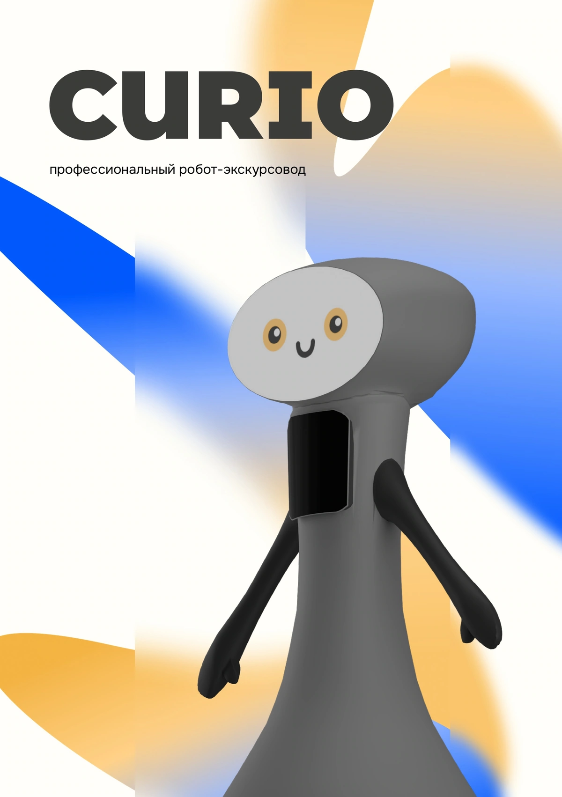
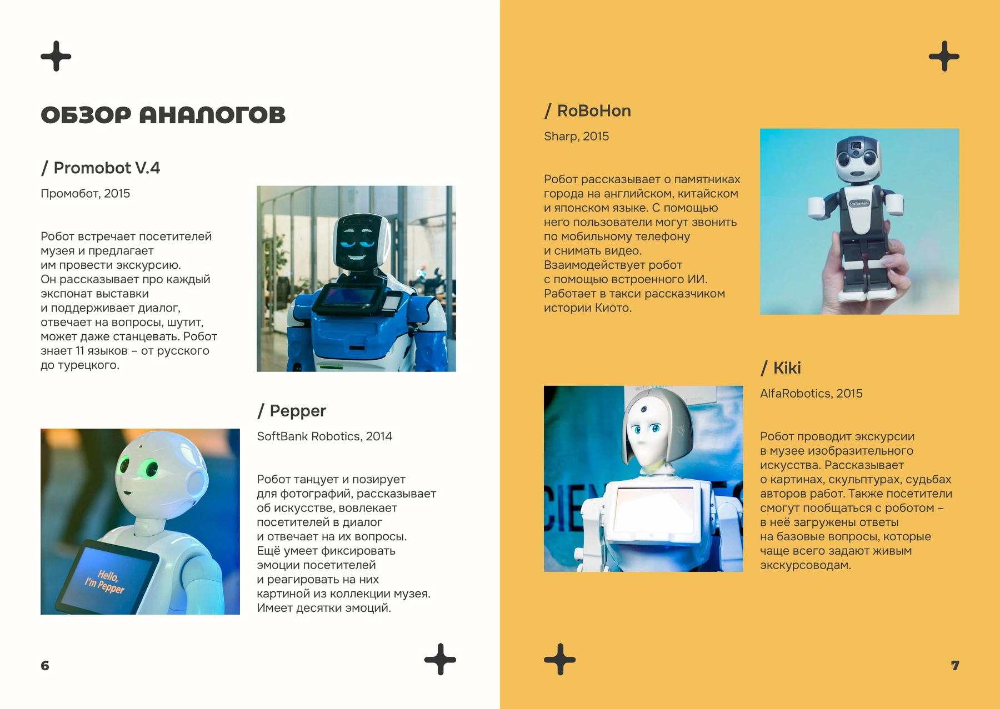
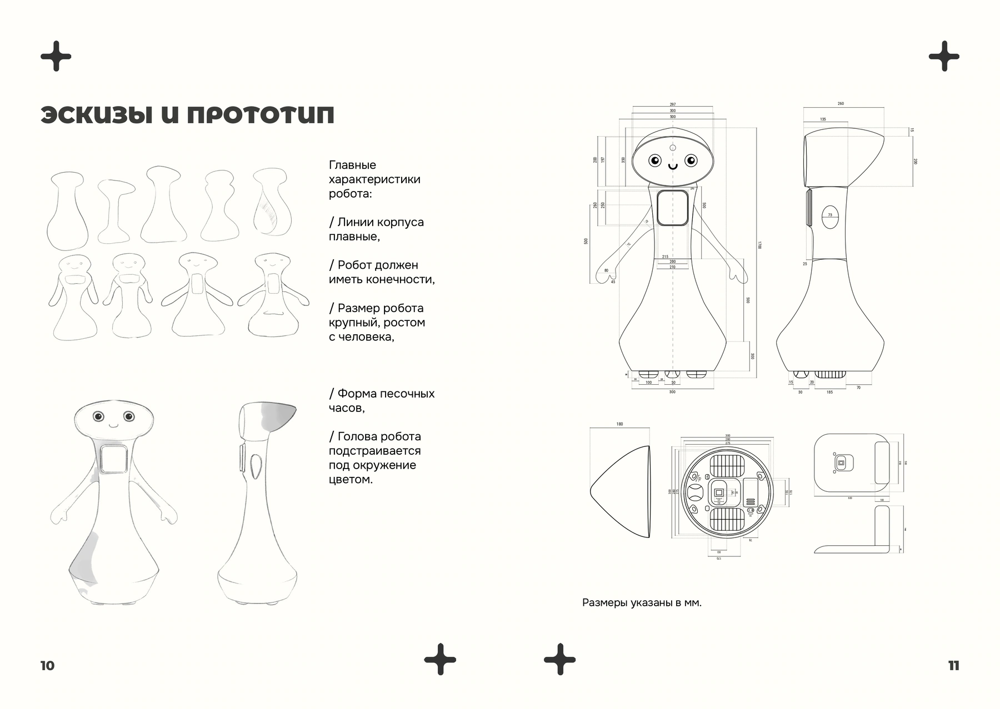
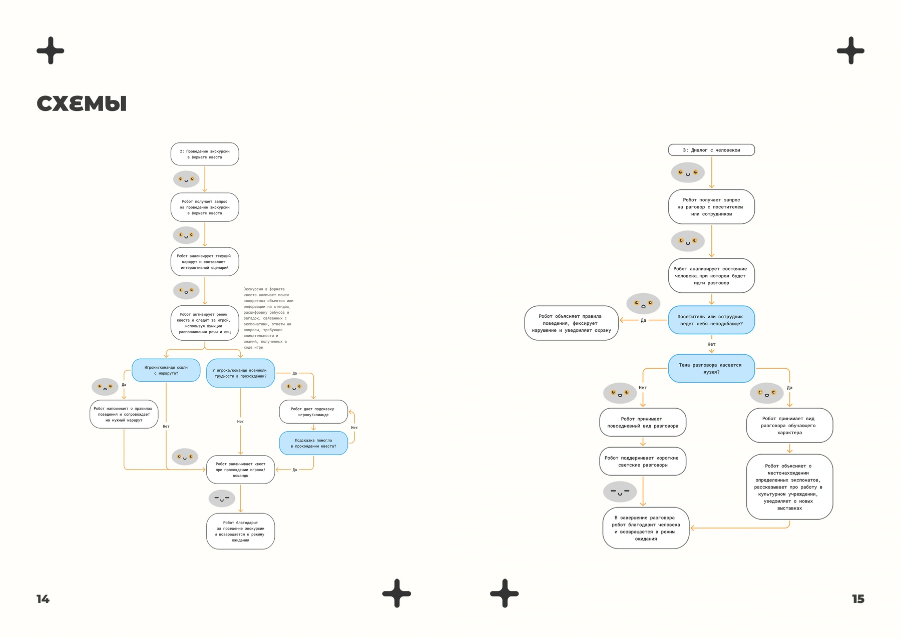
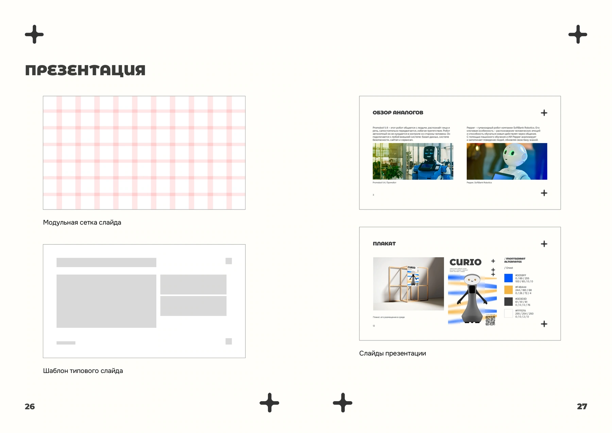
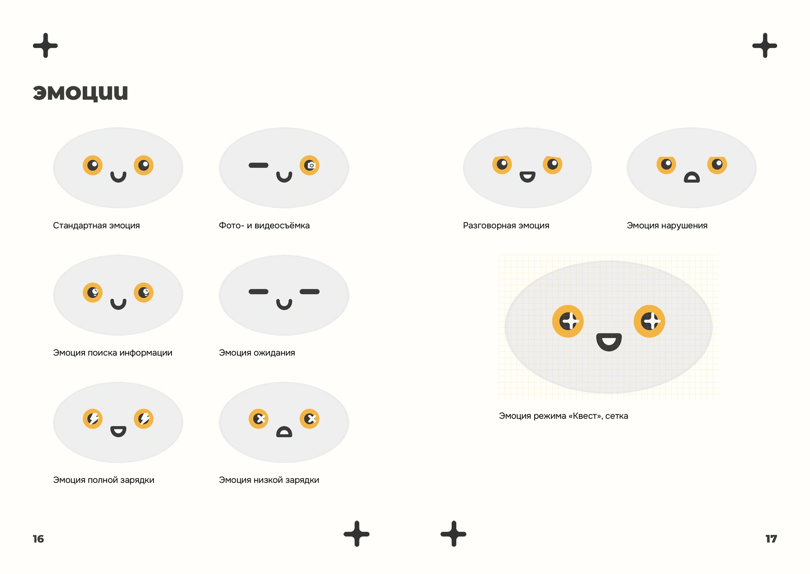
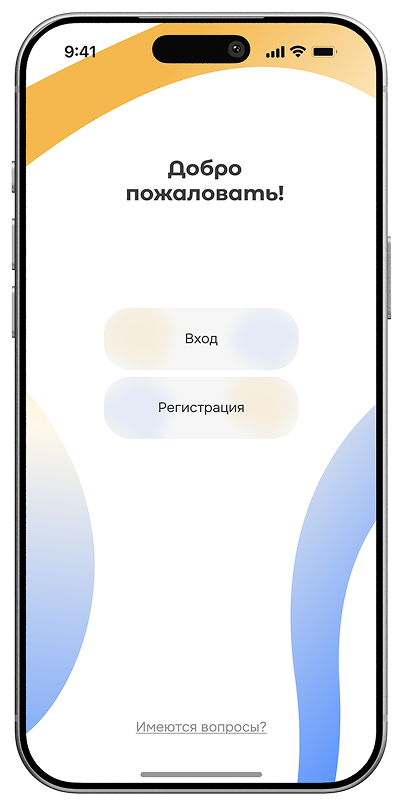
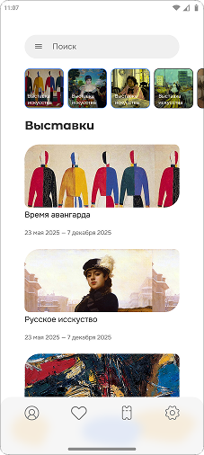
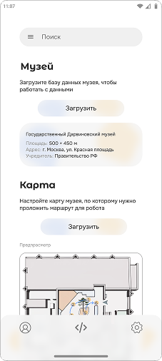
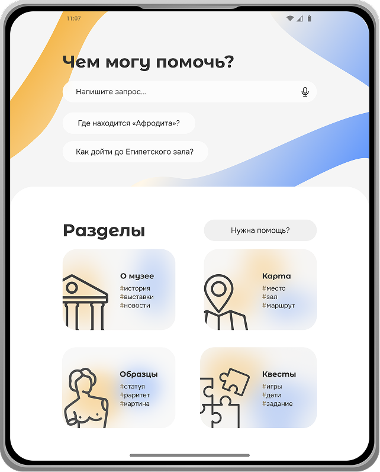
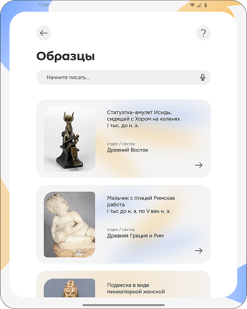
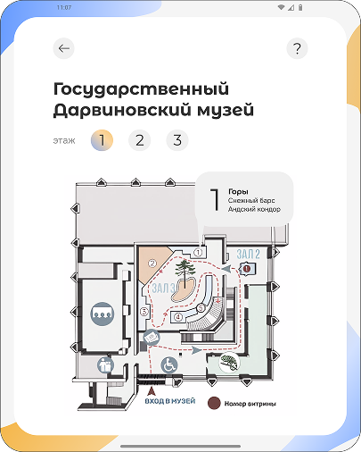
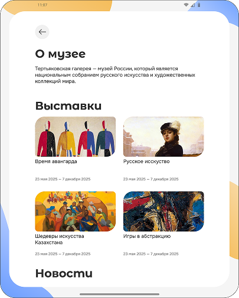